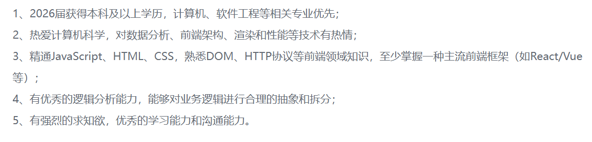

秋招心得体会和分享
秋招过程和经验分享
本科就业的动机
先介绍下我个人的基本情况，本人是22级软件工程专业，成绩排名50%左右，有一段SRTP经历，内容大概是和AI相关的。我在大二上结束的时候，大概就知道自己可能保研比较困难，（这里如果是给大一同学做宣讲，我会建议他们还不清楚自己的兴趣的时候，不要放弃任何可能性，或者说选择的权力，所以先努力卷卷绩点，在学习中探索。但现在大家应该基本上都大三了，所以我会说如果无意保研，比较偏向互联网大厂就业的话——注意这里限制于互联网大厂，可以放更多经历在项目或者实习上，不要再卷绩点，给自己增加压力和难度了），所以就开始考虑自己未来的发展。（当时还不知道zzb名额会这么多，不过可能也不会影响我的决定）。本来的预计是考研和就业二选一，于是在大二下尝试了SRTP，在过程中，感受到自己不太喜欢读论文，再加上本人英语不好，于是就考虑本科就业，这里坚定选择的时间大概是在大三上，SRTP中期检查的时候。
当我有本科就业的想法的时候，家长和一些长辈（比如高中老师，亲戚等）也表示了一定程度地反对，觉得只有本科学历上限太低，同时未来发展的选择也会比较受限。比如说如果想考公务员或者进大部分国企，硕士和本科的起点还是不一样的；但当时听了很多学长学姐的就业分享会，有很多优秀的学长学姐甚至放弃保研去实习。
再加上我主要想去的就是互联网大厂，因为工资高、想赚钱和人际关系相对更简单，在互联网大厂开发岗，本科学历并不是劣势，如果已经能进面试（浙大科班本科今年基本上都能进面试，除了阿里云卡硕士），反而有更早进入职场，相同年纪下职位和薪酬更高的优势，所以还是选择了本科就业。
简历和面试笔试经验分享
简历制作：网上随便找一个模板就行
个人认为的要点：
- 简历名字xxx-浙江大学xx届-前端/后端/xx-可立刻到岗，每周四天出勤六个月（日常、暑期啥的可以写）
- 颜色不要太花哨，最好不要带侧边栏（感觉比较占地方）
- 亮点可以写在更显眼的位置——比如我们的学校、学院，狠狠放大加粗，如果实习经历亮眼，可以放上面；项目经历亮眼，可以放上面；成绩优秀也可以标明
- 写清楚自己的求职意向，并针对不同岗位制作不同简历（比如央国企，可能更看重学生工作，志愿服务，政治面貌等）
- github上面有东西的话可以放，如果亮眼肯定是加大分，我个人经验是很多面试官会查看的，并且根据上面的内容进行一些提问
- 可以对技术栈和其他重点信息进行一些加粗
(想看简历可以私戳我)
面试经验整理：
-
面试环节：一般是自我介绍+面试官提问（项目、实习、八股）+做题（也就是手撕）+业务介绍+反问
-
面试主要是在面试中练习，不需要准备到万全就可以开始投了，在面试中成长比自己闭门造车快很多
-
面试自我介绍可以准备熟练一些，自我介绍要介绍出自己的亮点，并且引导面试官对自己拿手的实习/项目进行提问，有意规避掉自己不擅长的地方（当然如果发现短板也要努力补上）。比如：我在xx中采用了xx的方案，让用户首屏加载时间从xx提升到xx。这个时候面试官很有可能的提问就是：怎么想到xx方案的，xx方案具体是怎么实现的，用户首屏加载时间是怎么得到数据的，如果这些问题你都准备过，相当于你把面试官拉进了自己的节奏，那么面试问到自己陌生的地方的概率就减小很多。
-
八股优先准备最热门的，和自己实习和项目相关的，推荐几个八股网站：
后端：小林coding，javaguide
前端：Web前端面试-面试官系列
-
刷题熟能生巧，语言最好是对应你的技术方向，比如前端最好用js，java后端用java等（大部分厂不会限制语言，小部分会限制），leetcode准备hot100和常见手撕（比如快排，堆排序等）——可以看我的github
-
反问环节并不是无关紧要的，问得好是加分项。在技术面中，除了问业务，问技术栈以外，你还可以问：对新人的期待是什么，最希望校招生具有的品质，目前组内对AI的应用，您觉得研发除了技术以外还应该具备什么能力，您觉得我还有哪些需要提升的地方（其实这个是旁敲侧击问结果的好问题）等等。
-
可以了解一下AI相关的东西，现在面试中经常会被问到对AI的使用情况，对有哪些AI的了解（技术上的底层原理），不同公司的AI的使用体验
-
未来规划也是值得考虑的问题，很可能在二面及之后的面试被提问。一般可以介绍自己在技术上的发展路径和目标，是否有向管理发展的意向等。
-
每次面试完，整理所有的面试问题，把不会的东西全部弄懂，要做到下次被问到时能说出来。并且有意思考怎么才能把话题引导到自己擅长的部分。现在的行情下，手撕没撕出来挂的概率挺大的，如果手撕能力比较欠缺，需要尽快弥补。
-
面试和笔试不要作弊。比如一边放个AI，一边放手撕题目这种，你切出去面试官那边都是有提示的，有作弊嫌疑的话肯定就完蛋了，本来挂了还会反复捞，作弊可能以后也不太容易被捞起来反复面了。还有一点，那种作弊都抓不到的公司，不去也罢。
笔试经验整理：
- 多刷题，不同学历的笔试要求也有可能不一样（我们的笔试要求可能会相对低一些）。对比leetcode，笔试一般是要自己处理输入输出的acm模式，可以做一些额外训练。
- 其实笔试一般不难的，我周围同学和我一般能过大部分笔试。只要认真准备就好了。
- 前端笔试和手撕还需要多准备一些前端才会考的手写题，比如发布者模式，手写防抖、节流等，可以在牛客网上找面经。
总体时间线整理
我的时间线：
去年12月-今年3月：在杭州一家小公司做日常实习
今年2月-今年4月：找暑期实习
今年5月-今年8月：暑期实习
今年8月-今年10月：秋招
推荐的时间线：
如果现在有在日常实习，可以继续，日常实习对于找暑期实习是个加分项。如果现在没有日常实习，感觉可以不用找了，直接开始背八股项目，找暑期实习。周围同学有2月底3月初就拿到暑期offer，提前去实习的（网上还刷到过两段暑期实习，拿两个转正的，不过可能比较困难），也有一直不顺利，坚持到6月份才拿到暑期offer的。总之找暑期实习贵在坚持。从2月份到6月份一直都有暑期实习的岗位在的。
如果自己大三下课程不多，可以选择提前去异地暑期实习（我就是5月份去了北京），上课全部靠同学或者和老师商量。体感上，如果提前有做规划，22级计科和软工是完全可以做到大三下异地实习的。暑期实习开始后，其实也就可以陆续开始准备秋招了。互联网大厂中，秋招的提前批大概7、8月份会开，8月底到9月初所有正式批都会开，提前批可以早投递积累经验。正式批开始后，早投机会会更多一些，但开始晚并不意味着完全没有机会（似乎算法岗会开始更早，早晚投的差距也会更大）。
暑期实习不同大厂转正的节奏不一样，如果希望转正拿个保底（不转正的情况：不适应大厂工作强度和节奏，对组内业务或者氛围不满意，对base地不满意等等），可以苟到转正再走，否则2个月左右就可以提离职，有一定产出用来准备秋招了。
秋招实际上就是暑期二番战，都是相同的人在竞争。时间上，我从8月底面到了10月底，大概面试了20+场，基本上11月份还有捞面试的。还是一句话贵在坚持。可能看到保研同学的朋友圈还是多少会有些焦虑，不过还是要相信自己的选择，并坚定地走下去。
暑期实习的重要性
对简历的提升
根据身边统计学10+个意向本科就业的同学，在今年越来越卷的前提下，90%同学都有暑期实习。如果没有暑期实习，可能要八股和项目都特别硬才容易拿到offer了。
对面试的帮助
按照秋招的面试惯例，面试一般是二到三轮技术面，一轮hr面。一面一般是八股居多，二面和可能的三面是实习和项目居多。在秋招的时候，如果暑期实习含金量比较高，甚至一面八股都会特别少。因为八股是很多的，很难把所有的点都掌握得很深，而实习和项目的知识点是更好准备的。
对未来职业规划的明确
其实暑期实习最大的作用就是理解职场环境，因为实习生是成本最低的试错模式，如果对互联网的强度或者oncall发现接受不了，秋招可以立马转投国企or保研再说or考研考公（这个不一定来得及）。如果毕业后开始正式工作以后，发现不适应，那就比较麻烦了。
（如果有转正保底）对心态的稳定
拿我个人来举例，我暑期实习只面试了10场左右的时候，就焦虑到不行，如果第二天早上11点有面试，7.8点就会醒然后睡不着觉。秋招有保底之后，面了20多场感觉无事发生，遇到一些二面三面挂的，只是念叨几句实际上内心波澜会小很多。
周围同学也差不多，总体我感觉大家秋招心态都会好很多。
我对前端的认识
总体来看，秋招的开发岗主要有几个去处，后端、前端、客户端（又分为IOS和安卓），测开。我对后端和前端都有过一些了解，在这里和大家讨论一下。
前端也可以分为游戏前端、Web前端等，我主要想讨论的是Web前端。Web前端的要求主要是以下这样：（截图是字节的某Web前端岗位）

| 后端/服务端 | Web前端 | |
|---|---|---|
| 技术栈 | Java、Go等 | JavaScript，TypeScript（是js的超集） |
| 竞争情况 | 岗位最多：不仅互联网大厂有很多，国企等也收很多后端（主要是Java）。竞争更激烈，总体学历更好，科班学生更多 | 岗位数量在互联网大厂里略少于后端，但其他公司基本上不招单独的前端。竞争相对轻松，总体学历更普通，转码学生比后端多 |
| 个人未来发展（一家之言） | 会更和现在火热的大模型沾边，似乎未来发展更好 | 网上一直有说法是前端可能被AI代替，个人感觉并没有那么快，可能还有很长的道路。个人实习下来，在性能优化上前端还有很多优化空间，包括微前端、组件化等概念也有在推进，等于说是有活干。 |
| 薪资情况 | 大厂薪资基本齐平，部分大厂后端可能略高1-2k | 大厂薪资基本齐平，部分后端可能略高1-2k |
| 需要准备的八股 | os，计网，数据结构，数据库，java后端包括中间件等，手撕包括线程间通信等 | 计网比较多，os、数据结构都很少，数据库没有，TypeScript基本上要会，css需要会基本的，框架层面vue/react需要会一个并且掌握框架对应的八股，手撕有一些前端特有的 |
秋招offer的选择
我觉得如果大家真的面临选择，可以把很多个offer的优缺点列出来，按照重要性来量化打分。
比如你看重base地，那么杭州base+5分，上海base+3分，其他的不加分。
比如看重薪资，那么按照薪资打分，签字费、股票期权等视作加分项。
此外还有的考虑因素：组内氛围（了解过且氛围好，开盲盒），未来工作的确定性，对业务的喜好和业务是否核心，强度（不仅包括双休还是单休、早晚下班时间，还包括中午休息1h还是2h，能不能摸鱼等），公司的具体位置（比如华为青浦很偏），校招生培养体系，竞业协议会不会给校招生开，甚至和面试官是否聊得来（因为大概率是你未来的同事、领导，可以在hr面的时候询问一下）
此外，还需要了解一些关于五险一金等的基础信息，推荐一个视频：
同样是30w的offer，到手竟然能差10w+？选offer，除了钱还要看什么？_哔哩哔哩_bilibili
保持良好的心态
保持良好的心态是暑期实习和秋招的关键。个人感觉有以下诀窍：
- 找很多好朋友互相鼓励，分享各自的信息和面试经验，一同前行。这个真的很关键
- 不要只投递大厂，可以多留意一些中小厂，增加自己的机会
- 如果面试失败，就当给自己增长经验了；合理的复盘是必要的，但不要一直被面试失败影响心情和心态
- 适当放松，一直绷紧的绳子很容易断
一些名词的简要说明
base：工作城市，有时候也会有基本薪资的意思（月base25k，就是每个月基础月薪是25k）
多少k：几千，比如15k就是一万五
cv：个人简历（这个用的应该挺少的）
hc：headcount，就是这个岗位还能招几个人，公司还有几个位置的意思
jd：Job Description 岗位描述
bg：background 自己的背景，比如29（本科211硕士985），双2（本硕都是211），常见于小红书上面的一些分享
oc：offer call：面试官打电话告诉你面试通过，offer快发了
白菜，sp，ssp：薪资等级，（super）special offer，白菜< sp < ssp，不同公司的各个档位比例，各个档位薪资等都会有差距，可以在小程序offershow上面查看
a：一般是argue，常见于谈薪阶段，和hr争取一下更高的薪资
总包（package）：比如月base12k，15薪（年终奖发三个月月薪），签字费1w（这个签字费比如说入职第一个月发一半，干一年发另一半），那么总包就是19w
最后祝愿大家都能收获理想offer！